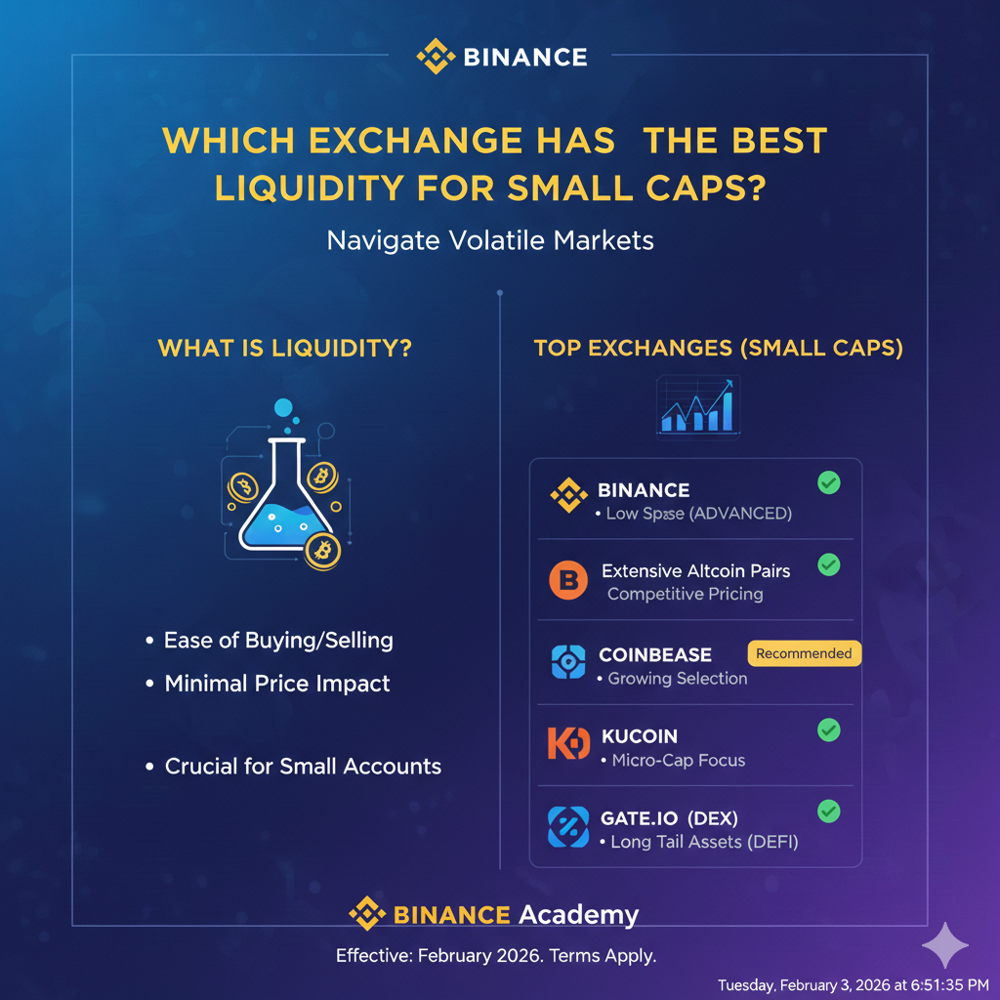

Which Exchange Has the Best Liquidity for Small Caps? (2026 Rankings)
When trading "small caps" or "low-cap gems" in 2026, the biggest risk isn't just the price going down—it's slippage. If an exchange lacks depth, a simple $5,000 buy order could push the price up by 3%, meaning you start your trade already "in the red."
In this guide, we analyze which platforms provide the deepest order books for assets under a $300M market cap, ensuring you can enter and exit positions without moving the needle.
1. Liquidity vs. Volume: The Trap
Many traders look at "24h Volume" and assume a coin is easy to trade. However, in 2026, wash trading (bots trading with themselves) still inflates volume figures on many tier-2 exchanges.
True Liquidity is measured by Market Depth—the total value of orders sitting in the order book within 2% of the mid-price. If a coin has $1M in volume but only $500 of depth, a single large trade will cause a price crash.
2. Top Exchanges for Altcoin Depth
KuCoin: The "Gem" Specialist
KuCoin remains the go-to for early-stage altcoins. Because they list projects earlier than Binance, their market makers are highly active in providing depth for tokens in the $50M–$200M market cap range.
Gate.io: The Largest Variety
Gate.io usually has the highest number of small-cap listings. While liquidity varies wildly between coins, their "Global Liquidity" program incentivizes market makers to maintain tighter spreads on micro-cap assets.
MEXC: High Volatility, High Speed
MEXC is often the first to list "hot" narrative coins (AI, DePIN, etc.). Liquidity is usually sufficient for retail traders ($100–$2,000 orders), but professional whales may experience significant slippage here.
Kraken: Quality Over Quantity
Kraken lists fewer small caps, but when they do, the liquidity is institutional-grade. Their due diligence process ensures that only assets with verified market-making partners are listed.
3. Small-Cap Liquidity Table (2026 Data)
| Exchange | Avg. 2% Depth | Small Cap Spreads | Listing Speed |
|---|---|---|---|
| KuCoin | High ($10k - $50k) | 0.15% - 0.30% | Fast |
| Gate.io | Moderate ($5k - $20k) | 0.30% - 0.80% | Very Fast |
| MEXC | Low/Moderate | 0.50% - 1.20% | Instant |
| Kraken | Very High ($100k+) | < 0.10% | Slow (Selective) |
| Binance | Extreme ($500k+) | < 0.05% | Very Slow (Vetting) |
4. CEX vs. DEX: Where to Go?
By 2026, Uniswap (on Base or Arbitrum) and Raydium (on Solana) often provide better liquidity for micro-caps than centralized exchanges.
- CEX: Better for coins with a $100M+ cap.
- DEX: Better for "New Gems" (Market cap < $20M). The Automated Market Maker (AMM) ensures you can always trade, though price impact can be high.
5. Indicators to Watch Before Buying
- The 2% Depth: Always check the order book on a site like CoinMarketCap or CoinGecko. Look for the "+2% Depth" column in the "Markets" tab.
- Bid-Ask Spread: If the gap between the Buy and Sell price is wider than 1%, you are losing money the moment you buy.
- Volume/Market Cap Ratio: A ratio higher than 0.5 often indicates "fake" volume or extreme wash trading.
6. Summary & Best Choice
If you are looking for the absolute deepest liquidity for high-quality small caps, KuCoin remains the industry leader. However, if an asset is listed on Kraken, it will almost certainly have a safer, more stable trading environment.
For the "wild west" of crypto gems (market caps under $10M), skip the exchanges entirely and use a DEX with a Solana or L2 bridge, as centralized order books are too thin for those assets.